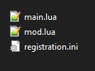

Creating plugins compatible with Neoloader means following certain
design principles, but the effort will provide benefits to your
plugin's users.
First off, while normal plugins only require a single 'main.lua' file
containing the plugin's code, in the usage of Neoloader a plugin will
require three:
Main.lua
<name>.ini
<name>.lua

In this case, main.lua is used exclusively to verify the registration
process of your plugin; You can include other code in it, but this code
will continue to be loaded by the old plugin loader and won't be
managable by Neoloader.
The INI file here is the plugin's "registration" details, and the formatting can be viewed on this page. This
contains the data Neoloader needs for determining your plugin's load
position, plus other optional information.
The third file is what would contain your actual mod's code. Once
registered and activated, this is the file that is executed. The INI
file should point to this, with a relative or absolute file path.
Converting plugins *can* be
pretty simple, if you only want to manage your existing mods using
Neoloader.
If your mod accesses other files, you will need to change how
files are accessed. Neoloader loads BEFORE the standard mod loader, so
dofile/loadfile do not automatically contain preset paths. Neoloader
provides lib.resolve_file() to improve potential file access, allowing
multiple attempts at locating a file.
In order to convert your old plugins to be managed through Neoloader,
just follow these steps:
Rename your main.lua file
WHAT you rename it to doesn't matter, other than that you will
be providing this name in the mod's registration file
Create and complete a mod registration file describing your
plugin (see INI registration for more
information)
Create a new main.lua file that registers your mod with Neoloader
(insert tricks for keeping plugins Neoloader-not-dependent below)